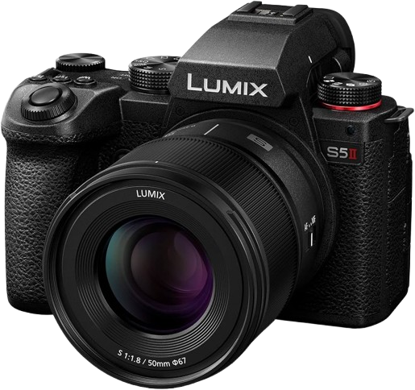

Cinematic video quality
The Lumix S5 II delivers excellent 4K and 6K video performance with rich detail, flexible color science, and strong dynamic range for filmmakers and content creators.
Professional Mirrorless Camera
A creator-focused full-frame mirrorless camera with stunning video quality, strong stabilization, and a compact design for filmmaking and photography.

The Lumix S5 II delivers excellent 4K and 6K video performance with rich detail, flexible color science, and strong dynamic range for filmmakers and content creators.
Built-in 5-axis image stabilization helps keep footage smooth and sharp, making handheld shooting much more reliable in motion and low-light conditions.
Its compact body, flip-out screen, and intuitive controls make it a practical choice for video creators, vloggers, and photographers who want versatility.